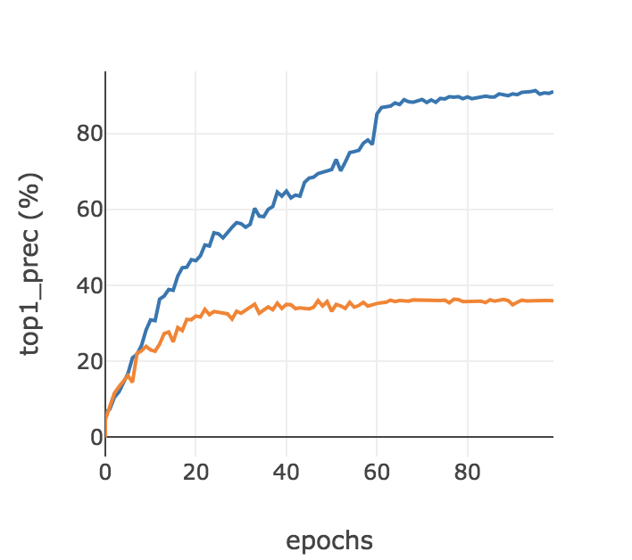
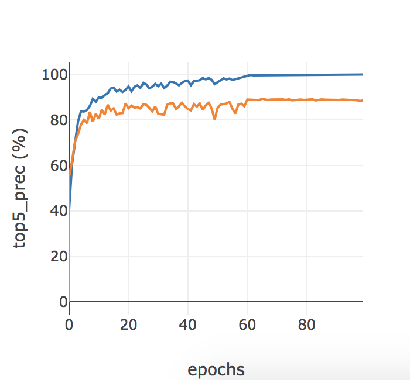

Project 6: Deep Learning
The goal of this project is to be introduced to deep learning tools used in computer vision. Instead of using bag-of-features to the problem in Project 4, this project is aimed at solving the same problem but using techniques of deep learning. The project will be broken down to the following components:
- Part 0 Training a Deep Network
- Part 1 Modifying Data Loaders and the Simple Network
- Part 2 Fine-Tuning a Pre-Trained Deep Network
- Conclusion and Analysis
Part 0
For this first part of the project, I began my exploration with Deep Learning. Deep Learning is a machine learning method that utilizes a set of units to perform feature extraction and dimension transformation. The data is forward passed layer by layer where the input of the current layer is the output of the previous layer. These layers are used to 'learn' different levels of abstraction that are presented by the problem input. 'Learning' is performed by minimizing the loss parameters over the training set. To perform this minimization, we use Backpropagation which is a procedure to compute gradients of our loss function. In order to perform Backpropagation, the transformation between layers must be differentiable. Furthermore, Deep Learning can be used in both a supervised and unsupervised setting.
Furthermore, for Deep Learning models we do not need to engineer features because the network is able to perform various levels of feature extraction innately through its layers. For example, in the Convolution Neural Network model, the kernel acts as various filters which serves as a feature detector.
For this part of the project, I simply ran through the code using the Jupyter notebook to train my simple deep network. Running this part of the code yielded a top-1 Accuracy of 36.382 percent. While the result was not good, it was impressive how easy and fast it was compared to project 4's bag of features.
|  |
The key takeaway from the graphs generated from part 0 is that the training accuracy appears to vastly outperform the validation set. This is usually a sign of overfitting.
Problem 1:
Next Jittering using Horizontal Flips are added.
Jittering in this case was used to increase the size of our training data. Jittering caused the top1 accuracy to slightly decrease because it is serving as a regularizer by providing noise to the data. What I noticed was that the training error also did not drop as quickly.
Problem 2:
Next Normalization was used.
|  |
Normalization greatly improved the top 1 accuraccy. This can be seen immediately from the first couple of epochs. Converting data to the same 'scale' allows data to be more comparable.
Problem 3:
Next DropOut of .5 was used.

|
I was surprised drop out had such a high accuracy. I was expecting it to fall off a little bit since it served as a regularaizer in that it removes units randomly. However, overfitting does not seem to be apparent in that the testing and validation graphs are tightly coupled. However, the validation graph seem to be more volatile than the training graph. This is later compressed at a price of accuracy in the next part.
Part 1:
For this part of the project, I added a transformation: transforms.RandomHorizontalFlip() to left-right mirror the training image randomly. Furthermore, I normalized the training data by its train mean and train standard deviation. I added random jittering to the training by randomly mirroring training images which serves to regularize the model. Adding small amounts of noise is used to generate slightly artificially corrupted examples. Regularizing serves to reduce variance and helps prevent overfitting of the model. Furthmore, I explored jittering by using transforms.RandomVerticalFlip() but it may have regularized my model too much because I was unable to meet the 50% threshold with the additional transformation. I found that a probability of .5 with RandomHorizontalFlip() provided just enough regularization to meet the threshold requirement. Additonally, normalization of the training images was needed to make sure that the input pixels had a similar data distribution across the training image set. Normalizing the images may help the network converge faster.
A sequential network is a model that operate from layer to layer. Each layer in the sequential network contains a 'n' set of filters of constant size whereas a parallel network contains just one Convolutional layer but contains different filter sizes. In a sequential network, the output of one layer is directly fed as input to the subsequent layer and so forth. The sequential layer used for this project utilizes the layers: Conv2d, MaxPool, Relu, Dropout, and BatchNorm.
The Conv2d layer is primarily used for feature extraction. The convolution layer produces a feature map with the utilization of kernels which are just filters. The size of this filter is known as the receptive field There can be multiple kernels used in a Conv2d layer. Next, the filter is slid over the image with a step size. Matrix manipulation is performed and the sum is returned onto the feature map.
MaxPooling is used to reduce the dimensionality of the input representation. Essentially, it condenses the size of the input by taking the max value of a window size. Maxpooling helps reduce overfitting by abstracting the representation of the input. As a result of the dimensionalty reduction, computational cost is also reduced since it diminishes the number of parameters to learn.
The ReLU layer essentially accomplishes piece-wise linear tiling which makes mapping locally linear. The ReLu essentially thresholds the values in an applied element. For example, any negative elements may be set to 0. One way that the ReLU improves the network is that it speeds up the training. Furthermore, the rectifier activation function allows a network to obtain sparse representation. Furthermore, models with ReLU neurons tend to converge much faster than neurons with other activation functions as described in ImageNet Classification with Deep Convolutional Neural Networks(http://papers.nips.cc/paper/4824-imagenet-classification-with-deep-convolutional-neural-networks.pdf)
The Drop Out essentially removes units randomly by setting it to 0 based on some probability that take place usually in the hidden layer. This essentially adds noise into the network. Drop out is another regularization technique that helps reduce overfitting in the network.
Batchnormalization like regular normalization strides to convert data onto the same scale. Batch normalization is applied to layer and noramlizes the output from the activation function prior to being inputted to the next layer. What if during training, one of the weights become drastically larger than the other weights? This would in turn cause the neuron that takes in the input of this weight to be skewed as well. This is the problem that Batch normalization essentially tries to solve.
The network I constructed that was able to beat the 50% threshold was by adding a Conv2d layer with 10 input and 10 output channel with a kernel size of 5 along with a BatchNorm2d layer of 10, Maxpool kernel size of 3 with stride 1, a RELU layer, and a DropoutLayer of .5 on top of the Sequential Network from part 0. With the additional Convolution2d layer the network was able to extract more features which I attribute to most of the improvement of my accuracy. The reason that I chose a kernelsize of 5 for the second network was because I found that a higher kernel size increased the run-time and did not drastically improve my accuracy. Furthermore, the other layers were added mainly for the reasons as I defined above, to mainly combact overfitting and improve computational speed. I had to tune my jittering probability down a bit to .5 since I found that a probability higher than .7 caused too much of a decay in the accuracy that prevented me from hitting the 50% threshold. The final Accuracy I was able to obtain was around 52%. Bias weights were initialized to 0 while data weights were initialized normally from 0 to 1.
Adding additional layers has successfully combatted overfitting to an extent. In comparison to part 0, the training precision and the validation precision are in tandem and no longer present such a large gap.
Part 2:
Fine tuning is essentially transfer learning in that you are using knowledge from the classification of one task and are applying it to another task. In this process we take a model that is already trained well and tweak it to adapt it for our problem. In order to utilize fine tuning, one must first determine what was learned from the previous task and what is learned in the current task and how to account for this differentiation. In order to actually perform fine tuning, layers would need to be added or removed from the seasoned model to account for the differentiation between the new task and the old task. Layers towards the end of the model are usually targeted for specific features while layers at the start of the model tends to target more generalized features. For this part of the report, I utilized AlexNet which is a convolutional neural network that was developed for the ImageNet Large Scale Visual Recognition Challenge. Assuming that AlexNet did well, we can simply tweak some of the parameters for this model to fit the problem of this project. This allows us to reap all the fruits of someone elses labor without having to build the network from scratch. It allows to ignore all the hyperparameter tuning that someone else has done such as number of layers, number of nodes, how much regularization, learning rate, etc. In order to achieve 80%, I simply removed the last Linear layer of the model and appended a new Linear layer of 4096, and 15 since there are 15 scene classification labels for our problem. I initialized the weights the same way I had done in part 1.
The key takeaway from the graphs generated from Part 2 was that the the model was able to achieve substantial accuracy in just a few epochs in comparison to Part 0 and Part 1 which had a much lower accuracy despite many iterations.
Conclusion
Throughout this project I was able to explore basic concepts of Deep Learning and see how much trivial it was to solve a problem that took painstakingly long in Project 4. I was able to explore the layers in the Convolutional Neural Network to see how adding more Convolutional layers may improve Accuracy by obtaining more features and how other layers like Maxpooling and Dropout were able to combat overfitting through the visualization of the graphs produced by part 0 and part 1. However, in this case, adding additional layers actually decreased accuracy but in some ways made the testing graph less volatile thereby decreasing variance. Lastly, part 2 allowed me to gain experience on how to utilize models that were already trained so I do not have to build one from scratch and avoid all the headaches that may be involved with hyperparameter tuning; in addition to how drastically less time it took to run the model.